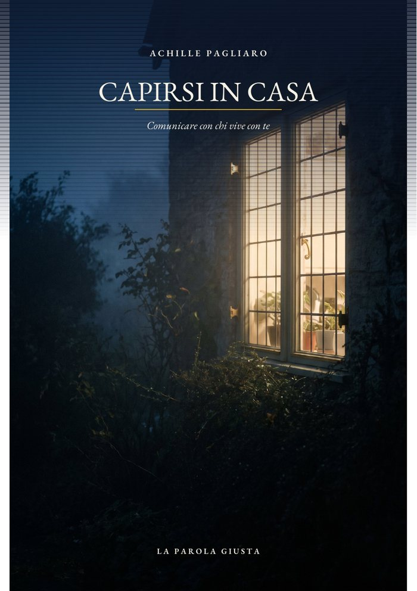

Con uno sconosciuto ascoltiamo fino in fondo. Con la persona con cui viviamo da vent'anni smettiamo dopo quattro parole. Non per disinteresse: perché crediamo di sapere già come finisce la frase.

C'è una deriva che si installa lentamente in quasi tutte le case, e che quasi nessuno nota mentre accade. Le conversazioni diventano tutte organizzative.
Chi passa a prendere chi, cosa manca, quando arriva quella scadenza, chi chiama l'idraulico, cosa si fa domenica. Sono conversazioni necessarie, sono efficienti, e occupano progressivamente tutto lo spazio disponibile.
Il risultato, dopo qualche anno, è una coppia o una famiglia che comunica benissimo e non si racconta più niente.
È probabilmente il libro più difficile della collana, e non per colpa di chi legge. In casa cambiano le condizioni:
Niente consigli generici sul dialogo in famiglia: le cinque condizioni che rendono la casa diversa da qualsiasi altro contesto, e cosa farne.
In un rapporto lungo conosci posizioni, argomenti e reazioni dell'altro. E poiché prevedi, smetti di ascoltare: è il problema centrale del libro.
Come si recupera spazio per le conversazioni che non riguardano chi passa a prendere chi.
Le discussioni che ripartono sempre dallo stesso punto, e le richieste che nessuno ha mai formulato ad alta voce.
Gli adolescenti che rispondono a monosillabi, e più avanti i figli adulti con cui il rapporto cambia forma ma le parole restano quelle di prima.
Soldi, salute, il rapporto stesso. Tre domande concrete per aprirli senza trasformarli in una resa dei conti.
Cosa succede dopo una lite. È anche la cosa più utile che i figli possano vedere: che dopo si torna vicini.
Con la persona con cui vivi stai avendo una conversazione che dura da anni. Non è fatta di momenti importanti: è fatta di migliaia di scambi brevissimi, la maggior parte dei quali riguarda cose pratiche, e che presi singolarmente non contano niente.
È proprio quella somma, però, a costruire il rapporto.
Chi vuole cambiare qualcosa in casa cerca in genere il colloquio risolutivo, e quasi sempre non lo trova.
I figli non imparano a comunicare da quello che viene loro insegnato. Imparano da quello che vedono, e lo imparano molto prima di poterlo nominare.
Un bambino che cresce in una casa in cui si alza la voce impara che il conflitto si gestisce così. Uno che cresce dove non si dice niente impara che le cose scomode non si nominano.
Uno che vede riparare impara che dopo una lite si torna vicini, e quella è probabilmente l'informazione più utile che possa ricevere.
Quando le conversazioni si sono ridotte all'organizzazione e le discussioni ripartono sempre dallo stesso punto.
Un capitolo dedicato a chi ha smesso di rispondere, e uno a cosa i figli imparano guardando come vi parlate.
Il rapporto cambia forma, le parole restano quelle di trent'anni fa, e certe cose vanno dette prima che sia tardi.
No, e non lo sostituisce. È un libro di comunicazione: parla di come ci si dicono le cose, non di dinamiche affettive profonde. Se in casa c'è una situazione grave, serve un professionista, non un ebook.
Sì, ed è il caso più comune. Quasi tutto quello che il libro propone si applica al proprio modo di parlare e di ascoltare, che è l'unica cosa su cui hai davvero controllo.
Il libro sostiene l'opposto, ed è la sua tesi centrale: il rapporto lo costruiscono migliaia di scambi ordinari, non il colloquio decisivo che quasi nessuno riesce a fare.
Sì. Questo è l'unico contesto in cui le tecniche degli altri libri funzionano meno, e il primo capitolo spiega perché. Se hai provato ad applicare l'ascolto attivo in cucina e non ha funzionato, qui trovi il motivo.
Subito dopo il pagamento ricevi il link di download via email. È un PDF illustrato, leggibile su computer, tablet, telefono ed ereader.
Comunicare con chi vive con te
Pagamento unico. Ricevi il link di download subito dopo l'acquisto.
Dedica di apertura